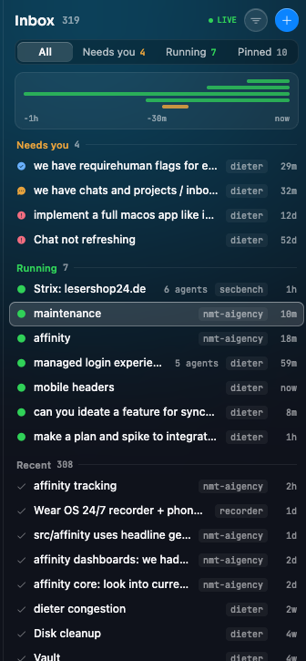

Mockup for docs/proposals/inbox-redesign.md. Every platform uses the same sections in the same order: Needs you → Running → Pinned → Recent. Pinned holds idle pins; a pinned row that needs you or is running stays in that section and shows a pin. Phones get 72 dp two-line rows and lose the tiles and the usage strip. The Mac follows the supplied screenshot: one-line rows, count segments and the timeline.

The same sections, with Pinned between Running and Recent; it is empty here because every pin is active. Rows are one line: status glyph, title, subagents, project chip, age. Pin and Done appear on hover.
| Order | Needs you → Running → Pinned → Recent, each row once. |
| Needs you | A question for you or an unread reply (and failures, if adopted). Pinned rows stay here and show a pin. |
| Running | Agents at work, pinned or not; pins get no priority inside. |
| Pinned | Pinned rows that are idle, so pins sit above the Recent pile. |
| Recent | Everything else. Reviews carry an eye badge and have their own filter. |
| Inside | Newest first. A row moves when a turn starts or ends, not on every tool call. |
| Owner | Kotlin core: the slice carries each row's section, in display order. |
| Avatar | Project tile; a ring spins around it while the agent works. |
| Line 1 | Title; time, tinted when the row wants you; offline glyph when stale. |
| Line 2 | project:, then the preview (· N agents while running). |
| Badge | ? asks you · ● unread · ! failed · eye review · pin. |
| Phone now | About 230 dp of header, then 120–150 dp cards: 3½ rows. |
| Phone new | 30 dp section headers and 72 dp rows: about 8–9 rows. |
| Mac now | Tiles of at least 76 pt: about 7 rows in a 725 pt column. |
| Mac new | One-line rows of about 26 pt: 20 or more rows. |